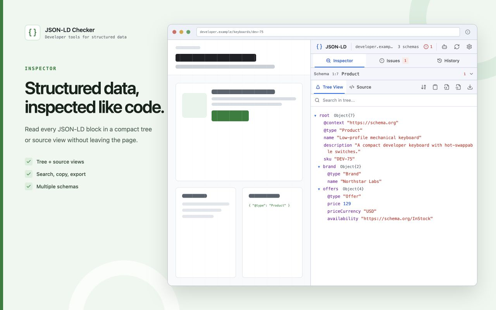
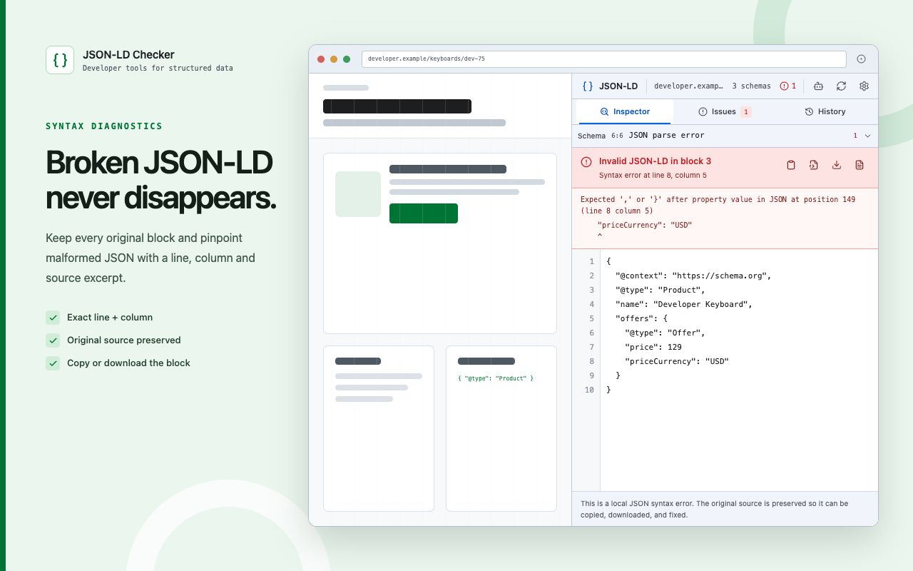
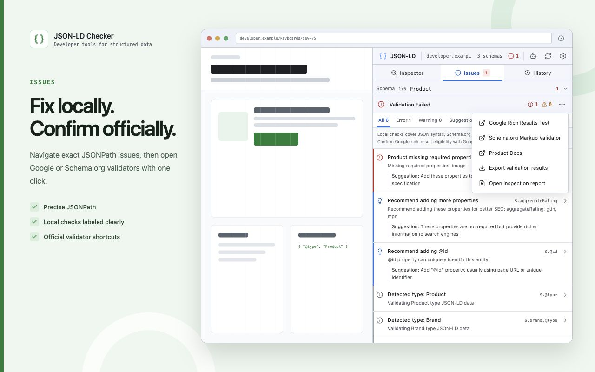
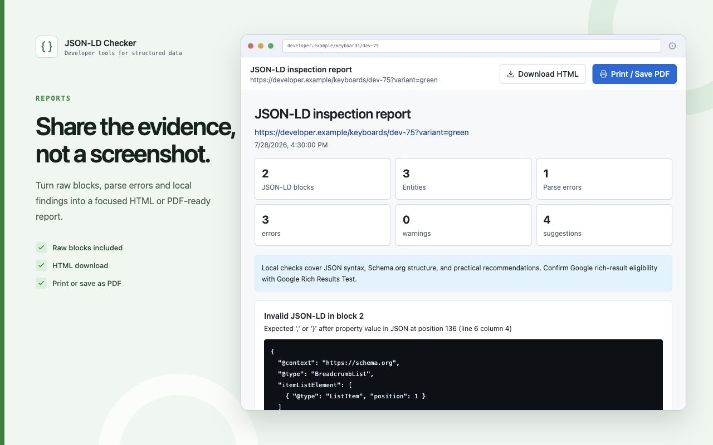

01 / PRESERVE
Every original block
Malformed JSON-LD remains visible instead of being silently converted into “nothing found.”
Inspect every raw block, pinpoint JSON syntax errors, navigate Schema.org findings, open official validators, and export a report—all from the current page.

The extension stays deliberately narrow: diagnose JSON-LD accurately, preserve its source, explain local findings, and make official confirmation easy.
Malformed JSON-LD remains visible instead of being silently converted into “nothing found.”
Syntax diagnostics include a source excerpt and caret, plus copy and download actions.
Top-level arrays, @graph, and nested typed entities stay linked to their source block.
Move from a local finding directly to the relevant node or nearest existing parent.
Open the current URL in Google Rich Results Test or Schema.org Markup Validator.
Include source blocks, parsing errors, entities, and local results in one focused artifact.



JSON parsing, Schema.org structure checks, navigation, report generation, settings, and history run locally in Chrome.
Google decides rich-result eligibility. Schema.org Markup Validator provides its own vocabulary validation. The extension opens both with the current URL.
The extension reads the active page only after you invoke it. There is no default all-sites access.
All-sites permission is requested only when you enable automatic detection and removed when you turn it off.
No analytics, advertising, user tracking, or project-operated data service runs inside the extension.
No. Source edits are local drafts. JSON-LD Checker never writes them into the inspected website.
No. Local checks are explicitly labeled. Use the shortcut to confirm eligibility in Google Rich Results Test.
One block can contain an array, @graph, or nested typed entities. The tool keeps the block-to-entity mapping.
No. Inspection, syntax diagnostics, validation, navigation, external validator links, and reports work without AI or an API key.
Free, open source, and local first.